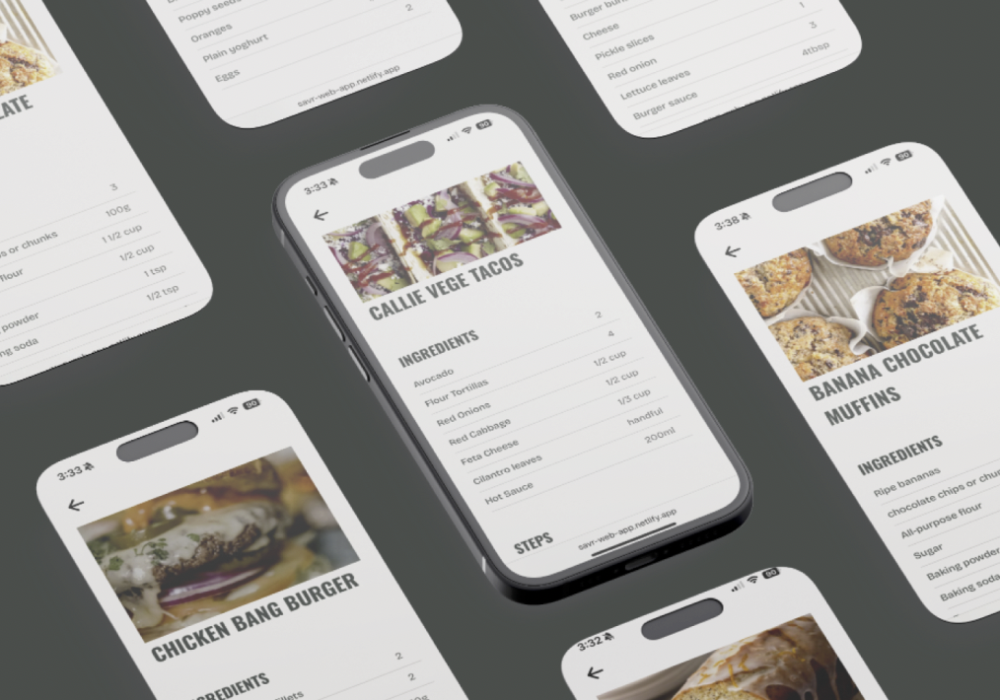
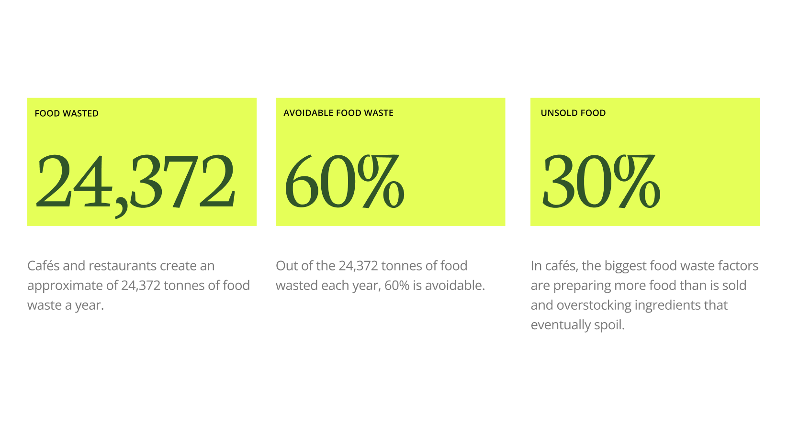
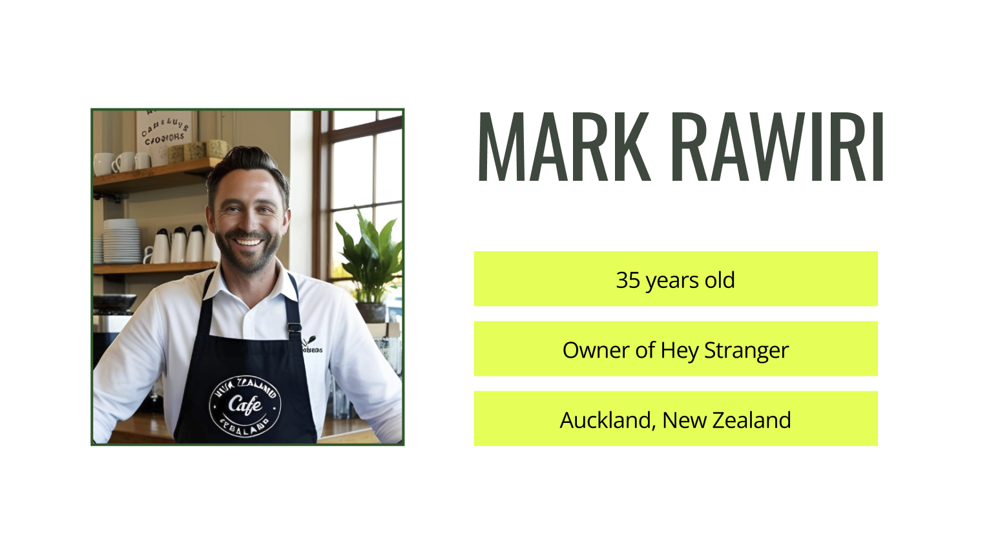
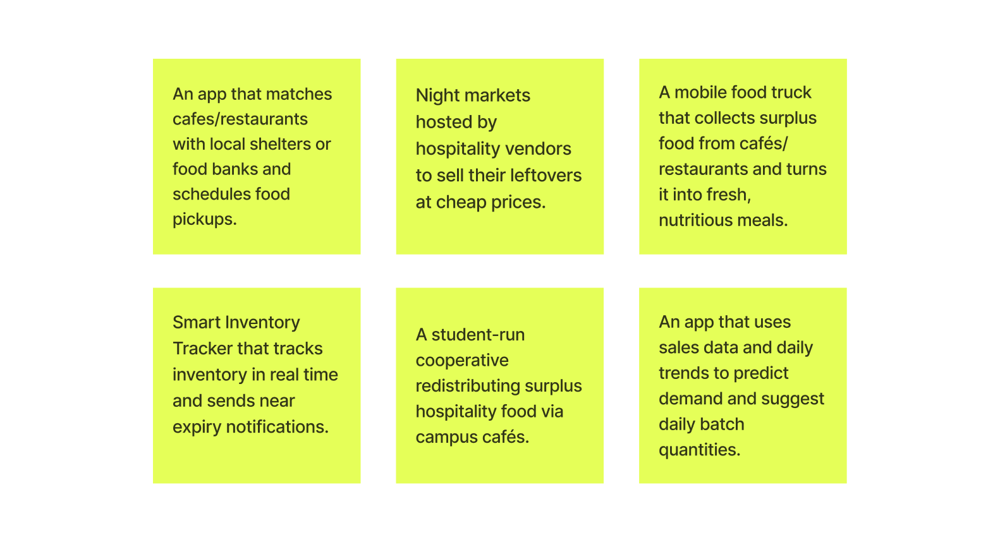
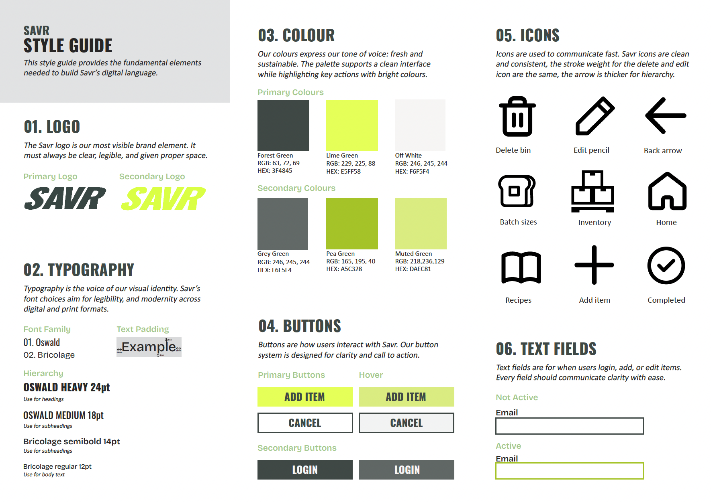
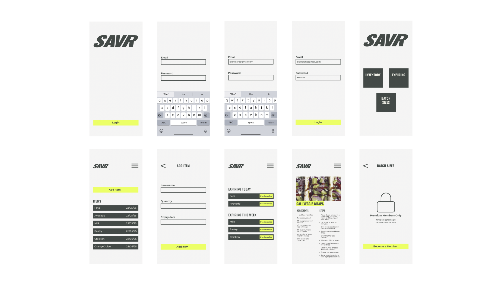
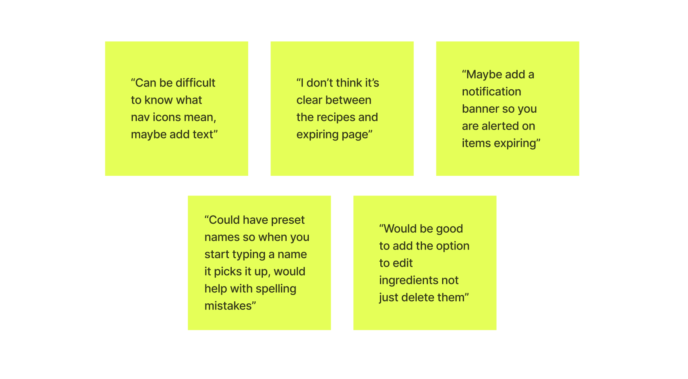
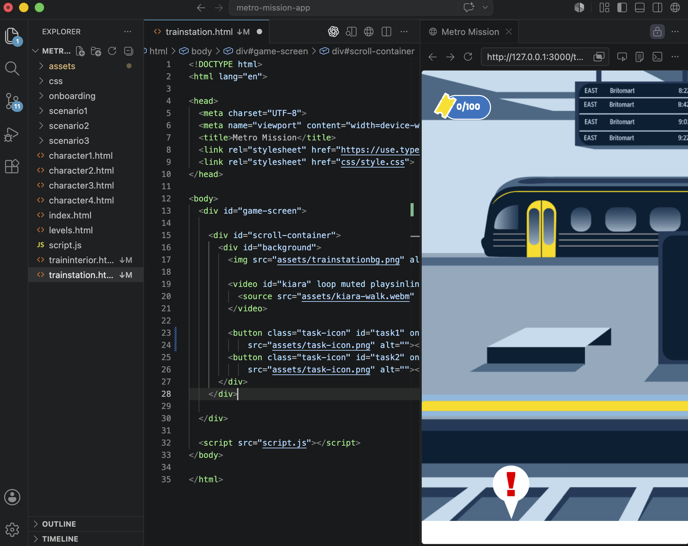

Case Study
Savr
An inventory management app for cafés to reduce food waste.
Solo ProjectMy Roles
- Branding
- User Research
- UX Design
- Prototyping
- App Development
- Graphic Design

An inventory management app for cafés to reduce food waste.
Solo Project
To create a new social or commercial enterprise in Auckland. The goal is to use design to address a real-world problem and positively impact social, cultural, or community well-being. The project required developing an interactive product or service.
Hospitality services such as cafés contribute significantly to food waste by routinely discarding food that is unsold or nearing its expiry or best before date at the end of each day. In many cases, prepared food is discarded at the end of the day even if it’s still safe to eat, simply because it can’t be sold the next day due to food safety policies.
An inventory management app designed for cafés to reduce food waste by tracking stock, sending expiry alerts, and generating recipe ideas based on soon-to-expire ingredients.



I looked into food waste in NZ, where the highest levels occur and who contributes most. While supermarkets are major contributors, I found they are already taking action through donations and waste-reduction apps.

Of the 24,372 tonnes of food waste generated annually in NZ, 60% of it is avoidable.
My research led me to focus on cafés and restaurant owners/managers within New Zealand as the next largest source of food waste.

Strict food safety regulations prevent cafe's and restaurants from reusing perfectly edible ingredients.
I explored existing solutions, finding that most food waste apps are international, with limited options tailored to the New Zealand context. In ideation, I explored concepts like discounted meals for students.

Games make learning feel rewarding. Kids already spend time on phones/tablets.
I created a brand identity that reflected the app's mission of reducing food waste while making it modern and engaging for users.

Working through game logic and core mechanics. Mapping level content, text, visuals, and overall game flow before developing high-fidelity screens.

Feedback from testing and critiques suggested the need to strengthen the visual hierarchy and add more features.

During refinement, I prioritised user experience, designing features that allow users to easily add, edit, and delete inventory items
